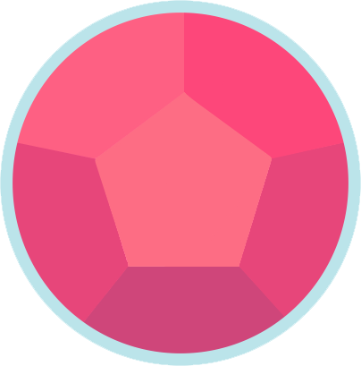
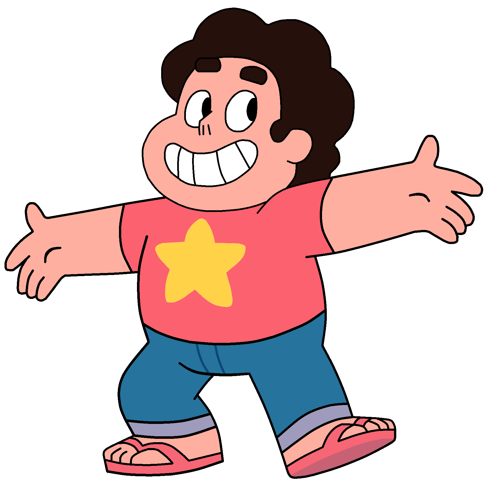
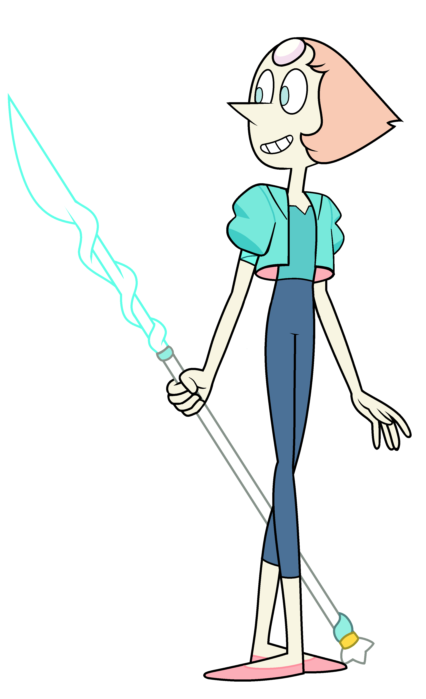
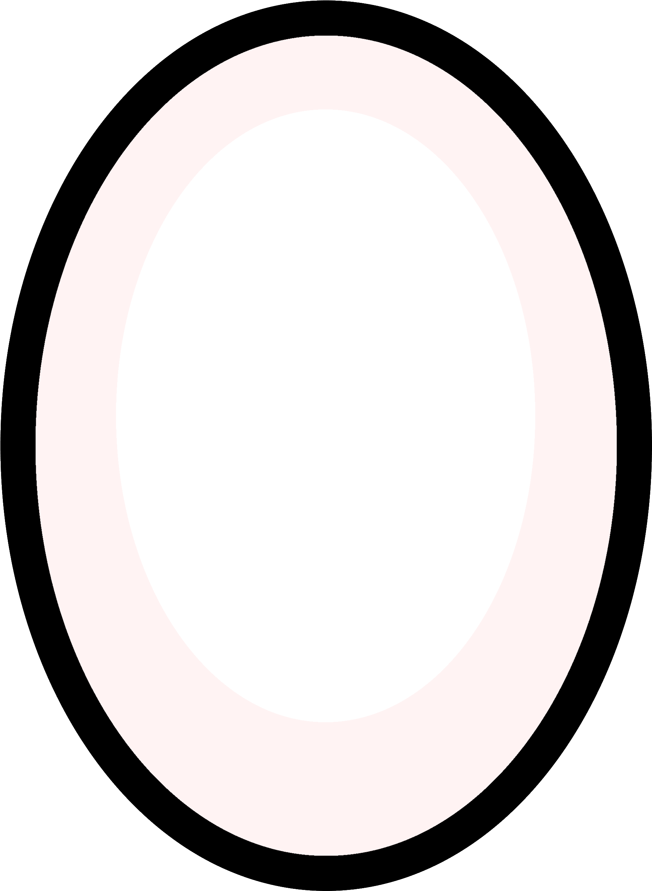
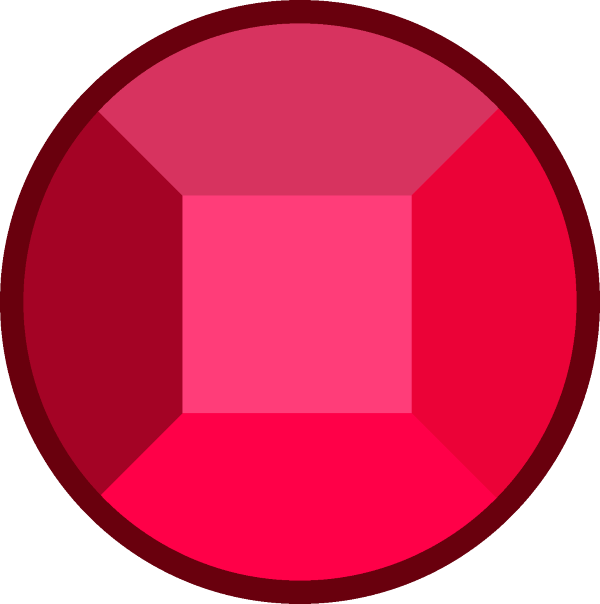
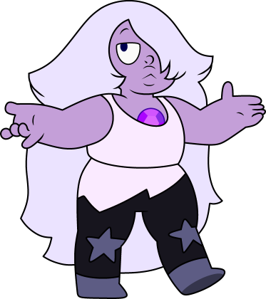
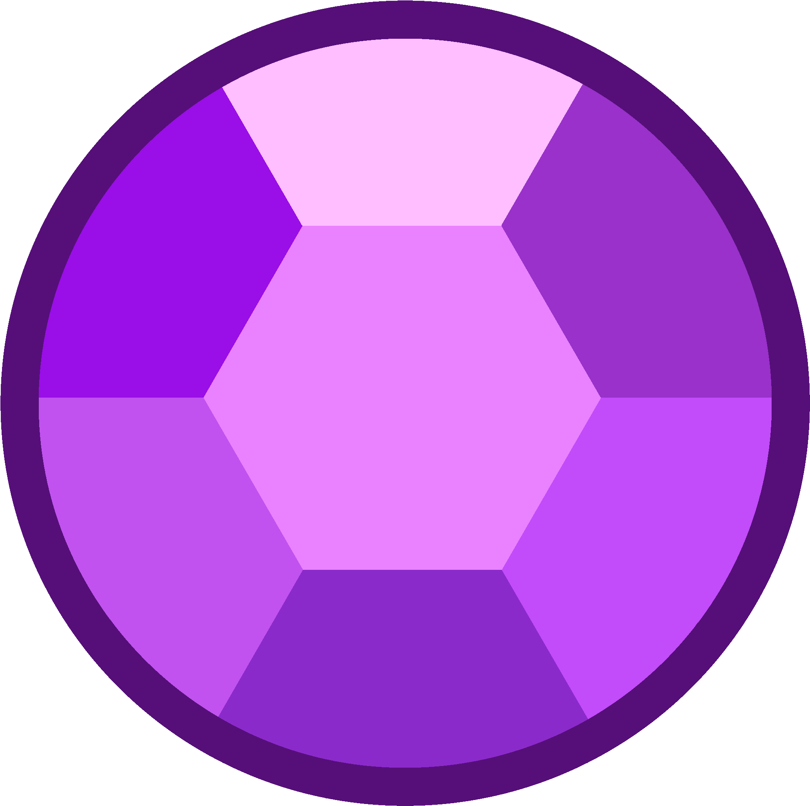
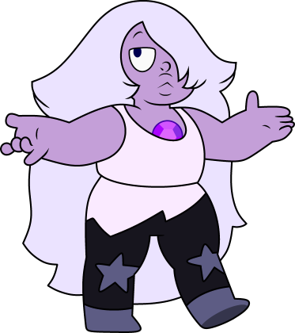
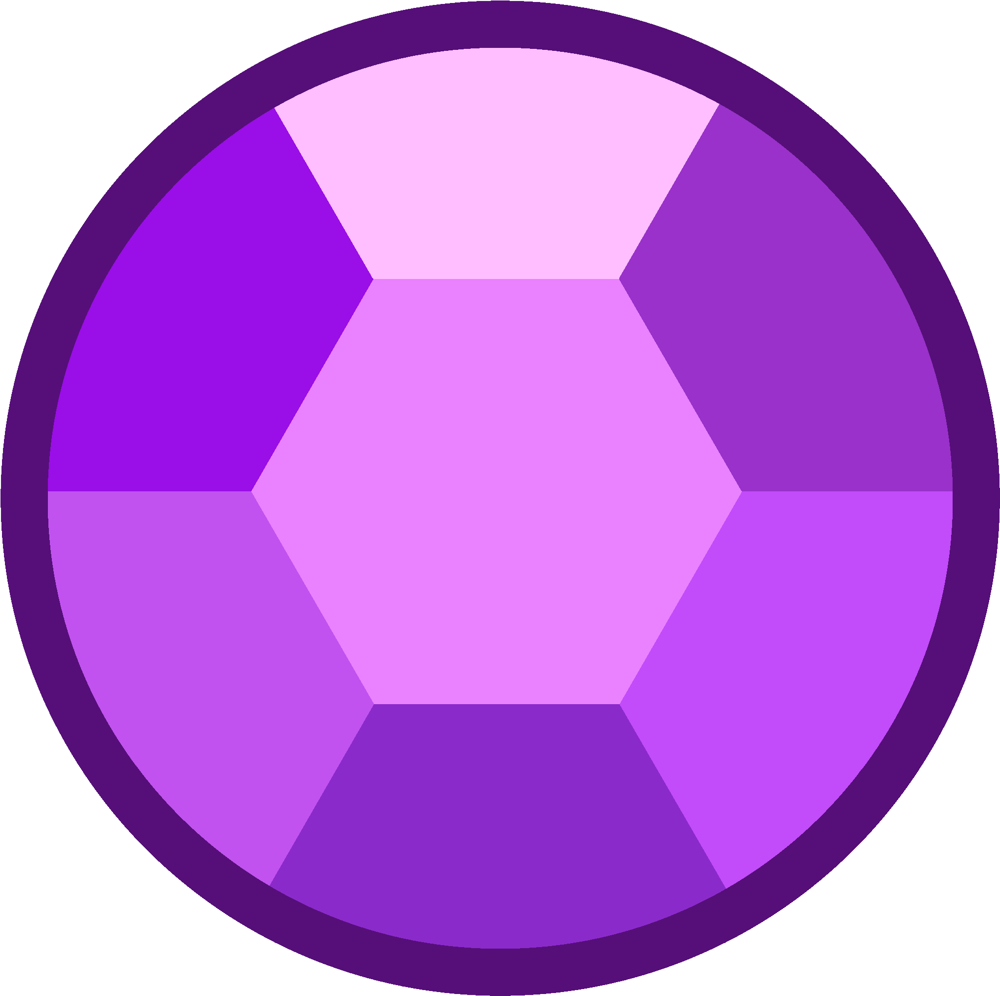

Steven Cuarzo Universe (cuyo nombre completo es Steven Quartz Cutie Pie DeMayo Diamond Universe en E.U.A) es el protagonista principal de la serie, miembro más joven de las Gemas de Cristal. Es el híbrido de humano y gema, siendo también el único individuo masculino de la especie Gema, su madre entregó su forma física para darle la vida.
   Perla (Pearl en E.U.A) es una de las protagonistas de Steven Universe y miembro de las Gemas de Cristal. Además de ser una de las más cercanas seguidoras de Rose Cuarzo, Perla es una de las últimas gemas supervivientes en la Tierra que se rebelaron contra las gemas del Planeta Madre para detener su invasión al Planeta Tierra. Al unirse a las Gemas de Cristal, Perla protegería a la Tierra en los próximos milenios junto a sus amigas, mientras que más tarde entrenaría al hijo de Rose, Steven.
Garnet (Granate en España) es una de las protagonistas de Steven Universe. Es la líder actual de las Gemas de Cristal y es la fusión entre Rubí y Zafiro. Junto con las demás integrantes de el equipo, Garnet es una de las pocas Gemas supervivientes de la rebelión. Después de la guerra, Garnet juró proteger la Tierra de los estragos que las Gemas del Planeta Madre causaron desde hace aproximadamente 5.000 años. Después de que Rose Cuarzo diese a luz a Steven, Garnet comenzó a entrenarlo junto a Perla y Amatista.
.png) 



Amatista (Amethyst en E.U.A) es una integrante de las Gemas de Cristal de Steven Universe y una de las protagonistas de la serie. Fue creada en la Guardería Principal, un lugar situado en la Tierra, como parte de un proyecto de las Gemas del Planeta Madre. Después de conocer a Rose Cuarzo, se unió las Gemas de Cristal para ayudarlas a proteger el planeta y, después que esta abandonase su forma física para dar a luz a Steven, se convirtió en su tutora junto con Perla y Garnet.